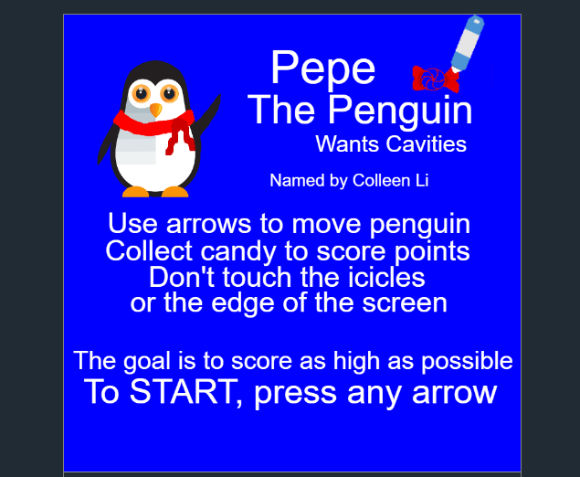

Rek'Sai

Malphite

Ashe

Blitzcrank
Rek'Sai
Malphite
Ashe
Blitzcrank


▶
◀
My name is Selena Lin. I attend Perry Meridian High School and will graduate in May of 2024. I am the oldest of three and is often found responsible of not letting my siblings go wild. Prior experience that I have had so far in the work force is with the family restuarant we used to have. Basically every waking hour not spent in school was spent in the restuarant. My responsibilities there included cleaning tables and supplies when I was younger and taking orders and acting as cashier when I was a bit older. That experience made me realize the hardships of running a business, the struggles of communication with customers, and how important budgeting and time management is. It also taught me that sometimes it is necessary to be stubborn and persistent, especially when malicious landlords want to cheat us of a $3,000 walk-in fridge.

I am a honors AP student and also partake in the Early College program offered by Vincennes University. AP classes I have taken so far include World History: Modern, United States History, Calculus AB, English Literature, and Seminar. Scorewise, I have recieved 4s and 5s. I am planning on taking AP Spanish, English Language, Computer Science A, Calculus BC, and Research senior year. Dual credit classes I have taken include Spanish II-IV, Biology, and Speech. I tend to be much more interested in STEM classes and hope to go to college for computer science, mathematics, or business.
I never really thought that I would get into coding and software development because there was always the thought that computers and technology is something for guys and guy dominate the industry. Even after seeing my second cousin code for his homework in college at Purdue, I still did not think of it as something I can do. What changed is that the computer science teacher at Perry also taught Dar/Comp, a class I had to take freshman year. My schedule for sophomore year was going to have study halls that I did not want and I decided to take more of that teacher's classes, which happened to be Intro to CS. Thank you Mrs. Towne.

In Intro, I was introduced to JavaScript as well as some HTML and CSS. Some of the projects I made in that class include an e-card and some simple games. In junior year, I took Computer Science and was introduced to Python. There was a lot more projects and figuring out how to code some pre-existing functions like .sort() and .reverse for lists/arrays. It is also when I was introduced to the Catapult program. One of my friends was a Catapult for the summer of 2022 and took me along to one of the Catapult + One events. It was really fun (we won the catapult making competition) and I was really excited to be a part of the 2023 cohort.
I have created many projects throughout the years. This includes stuff from school and unit projects created for Nextech. Three unit projects are linked and I have a project from Intro and one from junior year.
This is the first project created at the very beginning of the program. HTML and CSS were used to create a website about something that is felt deeply about, which for me, is having windows. This is mostly because it gets very suffocating at Perry somethings because most of the classrooms I am in have no windows. Click on the image to go to the project=>
This is the second project created and it involved using HTML, CSS, as well as JS to create a "choose your own adventure" sort of game. I made mine about a poisoned apple gifted from a friend. It was kind of inspired by Snow White and most of the paths lead to death but there are ways to live... Click on the image to go to the project=>
The final unit project for Nextech was to create a Buzzfeed quiz using HTML, CSS, and JS. My quiz was a "What Instrument are You?" quiz with answers being based on combinations of answers the user inputs for two questions. User input was quite difficult to collect at first but the lesson on it made the concept much easier. Click on the image to go to the project=>
Pepe is a simple game that was created in code.org using JS. This was created two years ago and I am still quite proud of it. Pepe the Penguin collects candy and avoids ice spikes. The speed increases as candy is collected and up to three ice spikes appear. Click on the image to go to the project=>
To find me on social media, just search up my name and usually it will show up. If there is a 6 somewhere in the username, yeah, that is probably me. I am pretty good about replying but that is on a day that I feel capable of replying. If it is something serious, I will reply. If I deem it to be not serious, I will ignore and maybe come back to it in a month or two. I have included my email and Instagram, the icon/logo for each will take you directly there.
I am quite active on Instagram (meaning that I reply and look at other people's posts and stories but I do not actualy post much myself) so the chances of me replying within a few minutes is much larger than with email. If it is not something big and important, hit me up on IG @s.lin0606

NPC 1
NPC 2
Selena
NPC 3
NPC4